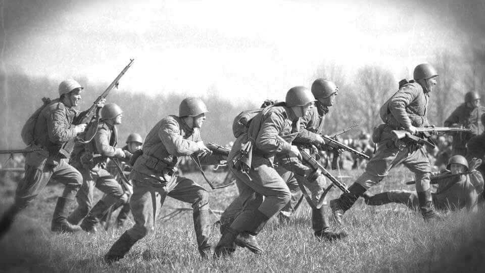

“For no one ever really wins a war: some just lose a little less than others.”
— Benjamin Myers, The Offing
War has been humanity’s way to solve conflicts ever since there were any. Those who ‘win’ the war still had casualties and people who sacrificed their life for the sake of their nation’s victory. There are people who never were able to see the end of the war. We’ve been very aware of war and its consequences throughout history. Pacifists and peaceful protesters have spoken out against countries’ decisions to take part in wars. Many people are always trying to find a diplomatic way of making wars come to an end. Yet, this has never been enough for us to be peaceful. In reality, borders are imaginary lines, and if we forgot about them, we would be much stronger.
World War 2 was the most deadly war in the history of humanity. In the end, it was technically the allies—United Kingdom, United States, France, the Soviet Union, and China—who ‘won’. Yet, the allied powers’ military death toll added up to tens of millions, and civilian deaths were an estimated 40 million. This shows those who prevailed, lost a substantial amount of lives. No matter the result, lives are worth so much more than the cause of the war. Though the end of World War 2 was celebrated, it was outweighed by the destruction and terror that still echoes to this day.
During war, people are led to do things that they would never do otherwise. Morality is lost solely for the purpose of a nation. Many innocent civilians get caught in the middle of a crossfire as well. Even though their beliefs may not represent that of their nation, it is them who have to pay the price of war. When a war ends, veterans come home with trauma, those who were lost are missed forever, and destroyed economies take decades to rebuild. Even in the ‘winning’ nations, there are still substantial amounts of destruction. After World War 2, many areas in London had to be completely rebuilt, and Germany was also divided in half. It wouldn’t be until 1989, the fall of the Berlin Wall, when Germany would be reunited as a whole.
Peace is much more difficult to achieve than conflict. We naturally steer towards war and disarray to solve our issues, rather than respectfully handling our differences. It takes patience, understanding, and restraint to achieve peace, but it is completely worth it. The innocent lives lost during war are nowhere near the worth of a conflict. We look to find our desires, rather than thinking of others and equality. Rather than deciding who earns everything, we should find a balance, and reach peace. Thank you for reading Social Science 43, and have a fantastic day.